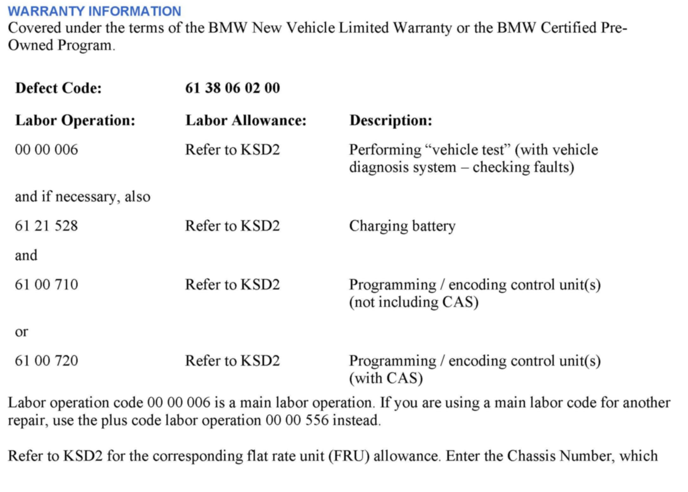
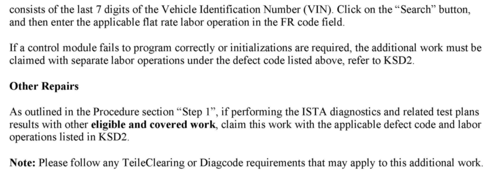

Instruments - Door Open Message/Chime Sounds
SI B62 03 11Instruments
August 2012
Technical Service
This Service Information bulletin supersedes SI B62 03 11 dated October 2011.
[NEW] designates changes to this revision
SUBJECT
ACC (Check Control) Message in the KOMBI Indicates the Doors Are Open
MODEL
[NEW]
E82
E88
E89
E90
E91
E92
E93
Vehicles produced from February 28, 2010 to February 28, 2012
E70
E71
E72
Vehicles produced from August 31, 2009 to March 31, 2012
SITUATION
One or more of the following situations can occur:
1. While the vehicle is in motion, a CC (Check Control) message in the KOMBI (instrument cluster) indicates that the doors are open, even though they are closed. In addition, a warning gong sometimes sounds, along with the interior lights turning on and off. This can affect all the doors.
2. The battery is discharged due to the FRM3 (footwell module) constantly waking the vehicle.
These situations can occur intermittently. The following fault code memory entries may also be present in the FRM:
- 0x9CBC - short-circuit or break in circuit in front door contacts, and/or
- 0x9CBD - short-circuit or break in circuit in rear door contacts
CAUSE
A coding error in the FRM3 is causing incorrect door contact detection.
[NEW] PROCEDURE
1. Perform a vehicle test using ISTA/D (Integrated Service Technical Application, Diagnosis) and complete relevant test plans for any FRM fault codes that are stored.
Note:
When the ISTA system message displays: Battery voltage only "XX.XX" V. Please connect charger. Please note the displayed battery voltage reading in the repair order comments section.
2. Perform the conversion "Activate threshold change door contact" with ISTA/P 2.46.0 or higher. The HO word "SWTK" will be added to the VO.
Note:
After this conversion is added to the measures plan, finish the programming/coding procedure by accepting the measures plan and following the instructions as indicated in ISTA/P.
Refer to CenterNet / Aftersales / Aftersales Business Development & Marketing Portal / Service Operations / Workshop Technology for information about using ISTA/P.


WARRANTY INFORMATION